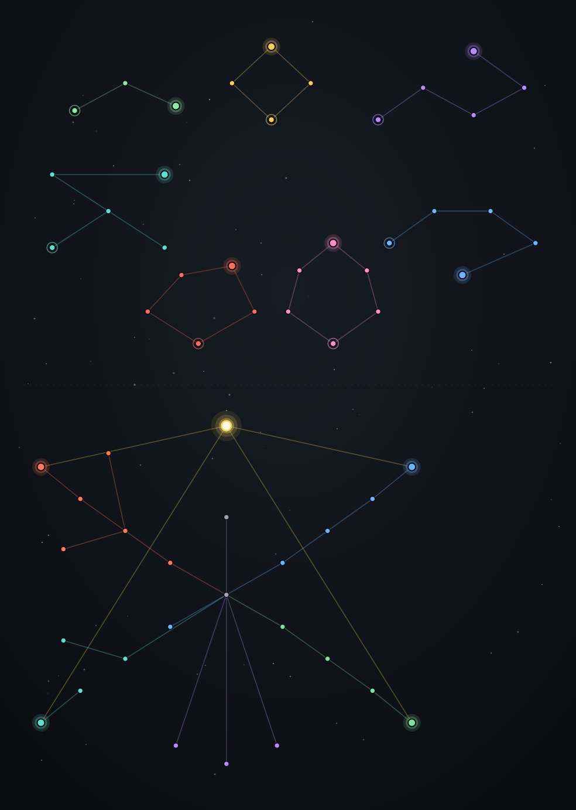

Specializations
A constellation skill tree spent with specialization points. A core constellation of offense, control, ward and flow rises to the Synthesis apex - and above it drift the seven mutually-exclusive ascension paths that crown a psycaster's identity.

Earning & spending points
- Points come from Tier II / III pilgrimage rewards and +3 per Transcendent tier.
- Open the constellation from the gold ★ chip at the top of the psycast tab, beside your tier badge.
- Nodes are bought with points and light up as they connect outward.
- Most respecs are free - only re-rolling a path you embraced from a card costs an enlightenment tier.
The core constellation
Every pawn begins at Kindling and grows through four branches, each ending in a capstone. Take any one capstone and Synthesis unlocks.
| Branch | Focus | Notable nodes → capstone |
|---|---|---|
| Offense | Damage & power | Surge · Onslaught · Fervor / Abandon · Siphon → Tempest |
| Control | Area & duration | Resonance · Lingering · Dominion · Echo → Maelstrom |
| Ward | Boons & shields | Potency · Bulwark · Wellspring → Sanctuary |
| Flow | Synergy & economy | Flow · Catalyst · Confluence → Conduit |
| Mod | One exclusive pick | Overflow / Mastery / Discipline / Attunement |
| Apex | Synthesis | +15% to all stats & synergies, +5 level cap, opens the seven ascensions |
The Mod branch is exclusive - pick only one of Overflow (+8% to all of a skill's stats),
Mastery (one psycast +100% primary & ignores cost scaling), Discipline (one path +50% scaling, starts a level
higher) or Attunement (one element +25% power & radius).
The seven ascension paths
Each gate requires Synthesis and shares one mutually-exclusive group: a psycaster may walk only one. Effects are lore flavour delivered as hediffs - these are the spec-tree faces of the seven ascension constellations.
| Path | Chain | Capstone |
|---|---|---|
| Halcyon | Stillness → Serenity → Halcyon | Neural heat builds 55% slower & recovers 90% faster; immune to all mental breaks. |
| Ascendant | Convergence → Logic Engine / Datum → Ascendant | −20% psyfocus cost, +35% sensitivity, steady passive psyfocus regen. |
| Penumbra | Umbral Veil → Shade → Gloaming → Eclipse → Penumbra | +34% sensitivity; immune to breaks, berserk & mind control; aura saps 50% sensitivity from hostile psycasters within 9 tiles. |
| Empyrean | Stargazer → Farsight → Constellate → Starlit → Empyrean | +30% sensitivity; a starlight aura sharpens every nearby ally's psychic sense. |
| Chronos | Hourglass → Dilation → Eddy / Rewind → Chronos | +30% meditation focus; strong steady passive psyfocus regeneration. |
| Pandemonium | Spark → Fracture / Frenzy → Riot → Pandemonium | +26% sensitivity; immune to mind control - no will commands the storm. |
| Consonance | Resonate → Attune / Accord → Chord / Harmony → Consonance | +24% sensitivity; a resonant chord amplifies nearby allied psycasters' psychic sense. |
Four paths share their constellation's name. The other three are spec-tree names for
ascensions titled differently: Halcyon grants Tranquil Mind, Ascendant grants Archotech Ascendant,
Penumbra grants Umbral Sovereign.